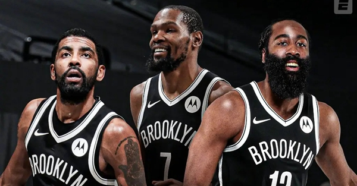
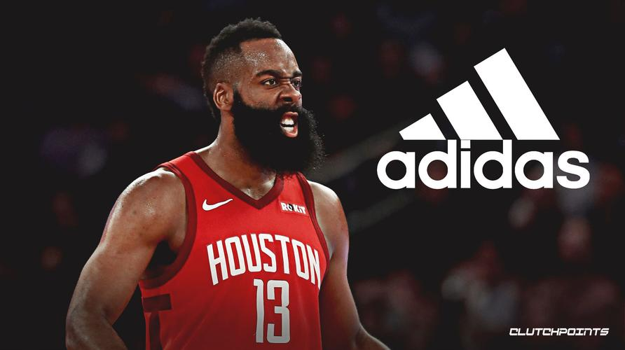
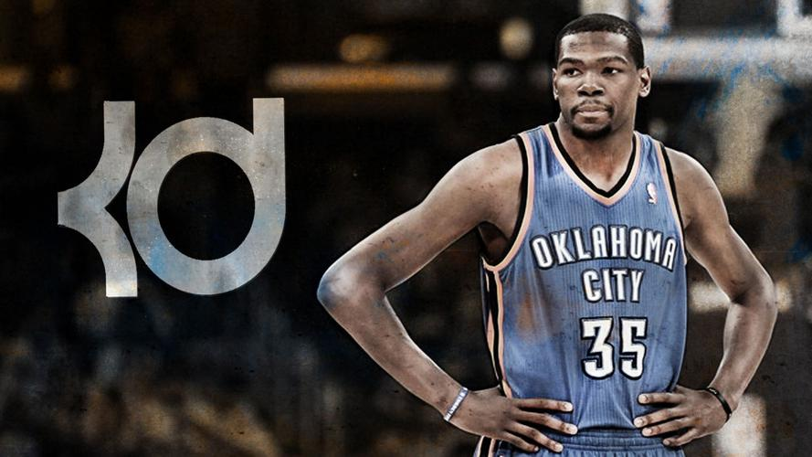
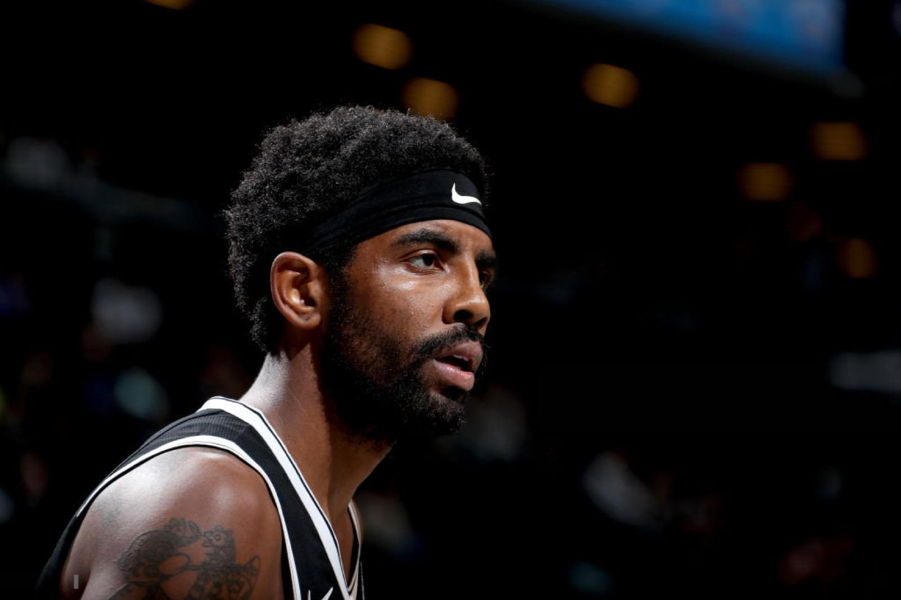

- NBA球星 -




时间回到一九至二零赛季前夕，因为球队的战绩不佳和商业价值一直缩水，前篮网队老板以23.5亿美元的价格将球队出售给了蔡崇信，他也从此前的小股东一跃成为了球队的唯一投资人。而除了接手篮网，蔡崇信更是耗资11.5亿美元买下了巴莱克中心球馆，以他惯用的互联网思维对布鲁克林篮网开始了一场不顾一切的豪赌，先是以四年1.41亿美元的底薪合同签下了进入自由市场的凯里欧文，再是用先签后换的方式送出了丹吉诺拉塞尔等三名球员，以四年1.64亿美元的超级合同得到了刚刚在季后赛阶段折戟金州、跟腱断裂的凯文杜兰特。在随后的协商交易中，小乔丹也以四年四千万美元加盟了篮网，也有相关报道称为了让他能够拿到千万年薪，杜兰特和欧文都甘愿降薪，但球队管理层还是保证了二人的合同薪资，欧文也仅仅损失了200万美元的奖金。而在杜兰特养伤一年复出回归后，为了迎合他的胃口，球队管理层也招募了史蒂夫纳什担任球队主教练，并于2021年1月14日在与四支球队的交易中得到了詹姆斯哈登，对球队进行了补强。而彼时的三人就单一而论，都属于联盟中最顶级的球员，更何况是在联手之后，他们也以绝对震撼的方式组成了足以令整个联盟颤抖的篮网三巨头，他们的目的也不言而喻，在当时球迷的眼中，这样的一支球队根本无法击败，而布鲁克林篮网三巨头也自此开始了他们的心酸之旅。


「 点击👆图片，了解你感兴趣的球星～ 」